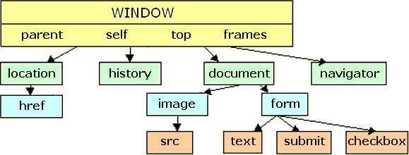
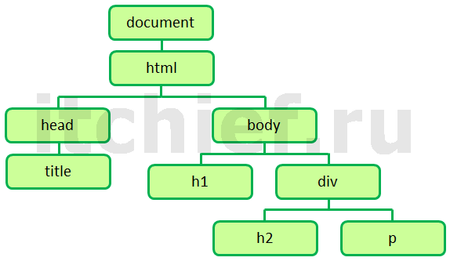
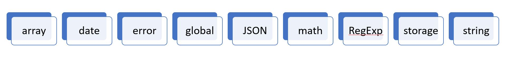

JS скрипты можно добавлять несколькими способами: добовлять файл через src или писать код в html (пример
выше в коде)
Строки можно выделять 'Одинарные ковычки' либо "Двойные ковычки"
(.)Точка -операция доступа (document.write('Добрый день!');)
(/* коментарий многострочный*/) // однострочный
var - ключевое слово для объявление переменной (объекта)(var quantity = 3;)
ИСПОЛЬЗОВАНИЕ КАВЫЧЕК ВНУТРИ СТРОКИ ( '"Специальное" предложение';)(экронирование \('=\"sale.html\">25%
скидка!';))
Создание массива при помощи литера var colors = ['белый', 'черный', 'пользовательский'];
Создание массива при помощи конструктора var colors = new Array('белый', 'черный', 'пользовательский');
Для создание метод используется слово function
function sayHello(width, height) { return width * height; }
Вызов var AAA=sayHello();
ПОЛУЧЕНИЕ С ПОМОЩЬЮ ФУНКЦИИ НЕСКОЛЬКИХ ЗНАЧЕНИЙ-надо использовать массив var sizes = [area, volume]; return
sizes;
var areaOne = getSize(3, 2, 3)[0]; var volumeOne = getSize(3, 2, 3)[1];
Анонимные функции var area = function(width, height) {return width * height;}; var size = area(3, 4);
НЕМЕДЛЕННО ВЫЗЫВАЕМЫЕ ФУНКЦИИ-ВЫРАЖЕНИЯ var area = ( function() { var width = 3; var height = 2; return
width * height;} () ) ;
СОЗДАНИЕ ОБЪЕКТА: ЛИТЕРАЛЬНАЯ НОТАЦИЯ
var hotel = {};
var hotel = {
name: 'Тула',
rooms: 40,
checkAvailability: function() {
return this.rooms - this.booked;
} };
Доступ к объекту:
var hotelName = hotel.name;
var hotelName = hotel['name'];
СОЗДАНИЕ ОБЪЕКТА: НОТАЦИЯ КОНСТРУКТОРА
var hotel = new Object();
hotel.name = 'Тула';
hotel.rooms = 40;
hotel.checkAvailability = function() {return this.rooms - this.booked;};
СОЗДАНИЕ НЕСКОЛЬКИХ ОБЪЕКТОВ. НОТАЦИЯ КОНСТРУКТОРА
function Hotel(name, rooms) {
this.name = name;
this.rooms = rooms;
this.checkAvailability = function() { return this.rooms - this.booked;};}
Создание:
var quayHotel = new Hotel('Тула', 40);
this - представляет собой ссылку на тот объект , внутри которого создается функция.
Встроенные объекты:
1.БРАУЗЕРНАЯ ОБЪЕКТНАЯ МОДЕЛЬ

СВОЙСТВО ОПИСАНИЕ
window.innerHeight - Высота окна (за исключением окантовки браузера или пользо вательского интерфейса) (в
пикселах)
window.innerWidth - Ширина окна (за исключением окантовки браузера или поль зовательского интерфейса) (в
пикселах)
window.pageXOffset - Расстояние, на которое документ был прокручен по горизонтали (в пикселах)
window.pageYOffset - Расстояние, на которое документ был прокручен по вертикали (в пикселах)
window.screenX - Координата указателя по оси X, началом координат служит верхний левый угол экрана (в
пикселах)
window.screenY - Координата указателя по оси Y, началом координат служит верхний левый угол экрана (в
пикселах)
window.location - Текущий URL-адрес объекта window (или локальный путь к файлу)
window.document - Ссылка на объект document, используемый для представления страницы, которая в данный
момент содержится в окне
window.history - Ссылка на объект history окна или вкладки браузера, который содержит информацию о
страницах, просмотренных в данном окне или вкладке
window.screen - Ссылка на объект screen
window.screen.width- Обращение к объекту screen для нахождения его свойства width (ширина) (в пикселах)
window.screen.height - Обращение к объекту screen для нахождения его свойства height (высота) (в
пикселах)
МЕТОД ОПИСАНИЕ
window.alert()- Создание диалогового окна с сообщением (пользователь должен нажать на кнопку «ОК», чтобы
закрыть это окно)
window.open() - Открытие нового окна браузера с URL-адресом, указанным в качестве параметра.
window.print()- Сообщение браузеру о том, что пользователь хочет вывести на печать содержимое текущей
страницы
2.ОБЪЕКТНАЯ МОДЕЛЬ ДОКУМЕНТА

СВОЙСТВО ОПИСАНИЕ
document.title Заголовок текущего документа
document.lastModified Дата последнего изменения документа
document.URL Строка с URL-адресом текущего документа
document.domain Домен текущего документа
СВОЙСТВО ОПИСАНИЕ
document.title Заголовок текущего документа
document.lastModified Дата последнего изменения документа
document.URL Строка с URL-адресом текущего документа
document.domain Домен текущего документа
3.ГЛОБАЛЬНЫЕ ОБЪЕКТЫ JAVASCRIPT.

СВОЙСТВО ОПИСАНИЕ
length - В большинстве случаев возвращает количество символов в строке
ОПИСАНИЕ ОПИСАНИЕ
toUpperCase() Переводит все символы в строке в верхний регистр
toLowerCase() Переводит все символы в строке в нижний регистр
charAt() Принимает в качестве параметра индекс и возвращает символ, находящийся на указанной позиции
lastIndexOf() Возвращает индекс последнего экземпляра символа или последовательности символов, встретившихся
в строке
substring() Возвращает символы, найденные между двумя индексами, причем символ с первым индексом включается
в такую подстроку, а символ с последним индексом — нет
split()- На каждом экземпляре символа, указанного в этом методе, происходит разрыв строки. Все полученные
таким образом фрагменты строки образуют массив
trim() Удаляет пробельные символы в начале и в конце строки
replace() Подобно команде «Найти и заменить»,данный метод берет то значение, которое должно быть найдено, и
заменяет его другим
В языке JavaScript насчитывается шесть типов данных.
1.Строки
2.Числа
3.Логические значения
4.Неопределенное значение — уже объявлен ная переменная, которой пока не присвоено значение;
5.null (переменная без значения)
6.Объекты
ГЛОБАЛЬНЫЕ ОБЪЕКТЫ: NUMBER
МЕТОД ОПИСАНИЕ
isNaN() Проверяет, является ли значение числом
toFixed()Округляет результат до конкретного числа или указанного количества десятичных знаков (возвращает
строку)
toPrecision() Округляет результат до заданного количества отображаемых разрядов (возвращает строку)
toExponential() Возвращает строку, соответствующую числу в экспоненциальном представлении
ГЛОБАЛЬНЫЕ ОБЪЕКТЫ: MATH
СВОЙСТВО ОПИСАНИЕ
Math.PI Возвращает число π (примерно равное 3,14159265359)
МЕТОД ОПИСАНИЕ
Math.round() Округляет число до ближайшего целого
Math.sqrt( n ) Возвращает квадратный корень из положительного числа.
Math.ceil() Округляет число вверх до ближайшего целого
Math.floor() Округляет число вниз до ближайшего целого
Math.random()Генерирует случайное число в диапазоне от 0 (включительно) до 1 (не включая)
СОЗДАНИЕ ЭКЗЕМПЛЯРА ОБЪЕКТА DATE
var today = new Date(YYYY, MM, DD, HH, MM, SS||MMM DD, YYYY HH:MM:SS);
МЕТОД ОПИСАНИЕ
getDate() setDate() Возвращает/устанавливает день месяца (1–31)
getDay() Возвращает день недели (0–6)
getFullYear() setFullYear() Возвращает/устанавливает год (4 цифры)
getHours() setHours() Возвращает/устанавливает час (0–23)
getMilliseconds() setMilliseconds() Возвращает/устанавливает миллисекунды (0–999)
getMinutes() setMinutes() Возвращает/устанавливает минуты (0–59)
getMonth() setMonth() Возвращает/устанавливает месяц (0–11)
getSeconds() setSeconds() Возвращает/устанавливает секунды (0–59)
getTime() setTime() Количество секунд, истекших с 00:00:00 1 января 1970 года по Всемирному
координированному времени (UTC).
getTimezoneOffset() Возвращает смещение часового пояса в минутах для данного региона
toDateString() Возвращает удобную для восприятия человеком строку date
toTimeString() Возвращает удобную для восприятия человеком строку time
toString() Возвращает строку, представляющую указанную дату
if (score > 50) { document.write('Пройдено!'); } else {document.write('Повторите
попытку...');}
== - ровно != - не равно , > ,< ,>=,<=
=== - строго ровно !=== - строго не равно(проверяет по значению данных и по типу данных)
((score1 + score2) > (highScore1 + highScore2))
ЛОГИЧЕСКИЕ ОПЕРАЦИИ
((5 < 2) && (2 >= 3))-Результируют ли оба выражения or False
((2 < 5) || (2 < 1))-или то или это
!(2 < 1) логическое нет
SWITCH
switch (level) {
case 1: msg = 'Удачи на первом этапе!';
break;
case 2: msg = 'Второй из трех - продолжаем!';
break;
default: msg = 'Удачи!';
break;}
Поскольку наличие объекта или массива может считаться истинным значением, именно так зачастую проверяется
существование элемента на странице.
if (document.getElementById('header')) { } else { }
Loops
for (var i = 0; i < 10; i++)
while (i < 10) { msg += i + ' x 5 = ' + (i * 5) + 'br'; i++;}
Ниже пример
Методы, находящие элементы в дереве DOM, называются запросами DOM .
Если вам требуется сделать что-то с элементом более одного раза, то результат такого запроса следует
сохранять в переменной.
var itemOne = getElementById('one');
Запрос к DOM может вернуть один элемент либо объект NodeList , представляющий собой коллекцию узлов .
Как у любого объекта, у NodeList есть свойства и методы.
• Свойство length — сообщает, сколько элементов содержится в NodeList.
• Метод item() — возвращает из коллекции NodeList конкретный узел, когда вы сообщаете этому методу индекс
интересующего вас элемента (в круглых скобках).
Ниже показано четыре различных запроса к DOM, все они возвращают объекты NodeList
getElementsByTagName('h1')
getElementsByClassName('hot')
querySelectorAll('li[id]')
var hotItems = document.querySelectorAll('li.hot');
for (var i = 0; i < hotItems.length; i++) {
hotItems[i].className = 'cool'; }
Метод getElementById() – наиболее быстрый и эффективный способ обращения к элементу
document.getElementById('one')
Метод querySelector() его параметром является CSS-селектор (var el = document. querySelector('li.hot'));
ОБХОД DOM
parentNode - Это свойство указывает на узел, соответствующий в HTML родительскому (объемлющему) элементу
исходного. У li, то его родительским узлом будет элемент ul.
previousSibling nextSibling Эти свойства содержат соответственно предыдущий и следующий элементы, которые
смежны исходному
firstChild lastChild Эти свойства указывает на первый или последний дочерний элемент исходного.
var startItem = document.getElementById('two');
var prevItem = startItem.previousSibling;
var nextItem = startItem.nextSibling;
Свойство nodeValue применимо к текстовому узлу,а не к элементу, содержащему этот текст.
document.getElementById('one').firstChild.nextSibling.nodeValue;
Свойство textContent позволяет собирать и обновлять текст и только текст, содержащийся в объемлющем элементе
(и его дочерних элементах).
document.getElementById('one').textContent;
Свойство innerHTML можно использовать с любым узлом элемента. Оно применяется как для извлечения, так и для
замены контента
var elContent = document.getElementById('two').innerHTML;
document.getElementById('one').innerHTML = elContent;
Манипуляция с DOM — это еще один способ добавления нового контента на страницу (альтернативный работе со
свойством innerHTML). Он включает три этапа.
1.СОЗДАНИЕ ЭЛЕМЕНТА createElement()
var newEl = document.createElement('li');
2.НАПОЛНЕНИЕ ЭЛЕМЕНТА КОНТЕНТОМ createTextNode() Метод createTextNode() создает новый текстовый узел.
var newText = document.createTextNode('quinoa');
3.ДОБАВЛЕНИЕ ЭЛЕМЕНТА В DOM appendChild()
var newText = document.createTextNode('quinoa');
position.appendChild(newEl);
УДАЛЕНИЕ ЭЛЕМЕНТОВ ПРИ ПОМОЩИ МАНИПУЛЯЦИЙ С DOM
var removeEl = document.getElementsByTagName('li')[3]; // Подготавливаем элемент к удалению из
переменной.
var containerEl = removeEl.parentNode; // Определяем элемент, содержащий удаляемый объект.
containerEl.removeChild(removeEl); // Удаляем элемент.
Метод write() объекта document позволяет с легкостью добавлять контент, которого не было в исходном коде на
странице. Тем не
менее обычно не рекомендуется использовать этот метод.
Безопасность
Экранируйте следующие символы, чтобы они отображались как обычный текст (а не обрабатывались как код).
& &
' ' (не ')
< <
" "
> >
/ /
' `
Никогда не включайте в ваш код JavaScript данные, полученные из недоверенных источников.
При наличии ссылок, содержащих пользовательский ввод (например, это могут быть ссылки на профиль либо
поисковые запросы) используйте JavaScript-метод encodeURIComponent() для кодирования пользовательского
ввода. Этот метод кодирует следующие символы:
, / ? : @ & = + $ #
JAVASCRIPT Используйте: textContent or innerText
JQUERY Используйте: .text()
К узлу элемента можно применять еще ряд свойств и методов
getAttribute() Получает значение атрибута
hasAttribute() Проверяет, есть ли у узла элемента указанный атрибут
setAttribute() Устанавливает значение для атрибута
removeAttribute() Удаляет атрибут с узла элемента
СВОЙСТВО ОПИСАНИЕ
className Получает или устанавливает значение атрибута class
id Получает или устанавливает значение атрибута id
СОБЫТИЯ ПОЛЬЗОВАТЕЛЬСКОГО ИНТЕРФЕЙСА Они происходят, когда пользователь взаимодействует с интерфейсом самого
браузера, а не с веб-страницей.
load Загрузка веб-страницы завершена
unload Веб-страница выгружена (как правило, в результате запроса другой веб-страницы)
error Браузер встретил ошибку JavaScript, либо ресурс не существует
resize Размер окна браузера был изменен
scroll Пользователь прокрутил страницу вверх или вниз
СОБЫТИЯ КЛАВИАТУРЫ
keydown Пользователь нажал клавишу (если он удерживает клавишу,это событие повторяется)
keyup Пользователь отпустил клавишу
keypress Вставляется символ (если пользователь удерживает клавишу, это событие повторяется)
СОБЫТИЯ МЫШИ
click Пользователь нажимает и отпускает кнопку мыши, удерживая указатель на одном элементе
dblclick Пользователь дважды нажимает и отпускает кнопку мыши, удерживая указатель на одном элементе
mousedown Пользователь удерживает кнопку мыши, пока указатель находится на элементе
mouseup Пользователь отпускает кнопку мыши, пока указатель находится на элементе
mousemove Пользователь перемещает указатель мыши (не относится к сенсорным экранам)
mouseover Пользователь перемещает указатель мыши в пределах одного элемента (не относится к сенсорным
экранам)
mouseout Пользователь перемещает указатель мыши, выводя его за пределы элемента (не относится к сенсорным
экранам)
СОБЫТИЯ ФОКУСИРОВКИ
focus / focusin Элемент получает фокус
blur / focusout Элемент теряет фокус
СОБЫТИЯ ФОРМ
input Изменилось значение в любом элементе input или textarea либо в любом элементе с атрибутом
contenteditable
change Изменилось значение в раскрывающемся списке, положение переключателя или флажок был
установлен/сброшен
submit Пользователь отправил форму (нажав клавишу на клавиатуре или экранную кнопку )
reset Пользователь нажал кнопку сброса формы (в настоящее время используется нечасто)
cut Пользователь вырезал содержимое из поля формы
copy Пользователь скопировал содержимое из поля формы
paste Пользователь вставил содержимое буфера обмена в поле формы
select Пользователь выделил часть текста в поле формы
СОБЫТИЯ ИЗМЕНЕНИЙ DOM
DOMSubtreeModified В документ было внесено изменение
DOMNodeInserted В документ был вставлен узел, являющийся прямым потомком другого узла
DOMNodeRemoved Из узла был удален узел-потомок
DOMNodeInsertedIntoDocument Узел был вставлен в документ как потомок другого узла
DOMNodeRemovedFromDocument Узел был удален из документа как потомок другого узла
ТРИ СПОСОБА ПРИВЯЗКИ СОБЫТИЯ К ЭЛЕМЕНТУ
1.Обработчики событий, действующие на уровне HTML-разметки(устаревший метод лучше не использовать)
2.Традиционные обработчики событий, используемые на уровне DOM
var el = document.getElementById('username');
el.onblur = checkUsername;(вызываемая функция)
3.Слушатели событий DOM уровня 2
var el = document.getElementById('username');
el.addEventListener('blur', checkUsername, false);(Фаза захвата, называемое перехватом события; обычно
устанавливается в false)
В браузерах Internet Explorer 5–8 не подде рживался метод addEventListener(). Вместо него браузер
использовал собственный метод attachEvent()ст. 264
ОБЪЕКТ EVENT
target Цель события (именно тот элемент, с которым про исходит взаимодействие)
type Тип сработавшего события
cancelable Возможность или невозможность отмены того поведения элемента, которое задано по умолчанию
preventDefault() Отменяет заданное по умолчанию поведение элемента (если такое возможно)
stopPropagation() Блокирует дальнейшее всплывание или захват этого события
СОБЫТИЯ ПОЛЬЗОВАТЕЛЬСКОГО ИНТЕРФЕЙСА
load Срабатывает, когда загрузка страницы завершится. Также может срабатывать на узлах других
элементов(window.addEventListener('load', setup, false);)
unload Срабатывает при выгрузке веб-страницы из браузера
error Срабатывает, когда браузер встречает ошибку JavaScript, либо если ресурс не существует
resize Срабатывает при изменении размера окна браузера
scroll Срабатывает, когда пользователь прокрутил страницу до самого низа.
ФУНКЦИЯ (СОЗДАЕТ ОБЪЕКТ JQUERY)
$('li.hot')
ВЫПОЛНЕНИЕ ДЕЙСТВИЙ С ЭЛЕМЕНТАМИ С ИСПОЛЬЗОВАНИЕМ МЕТОДОВ JQUERY
$('li.hot').addClass('complete');
ПОИСК ЭЛЕМЕНТОВ
ОСНОВНЫЕ СЕЛЕКТОРЫ
* Все элементы
элемент Все элементы с определенным именем
# id Все элементы, чей атрибут id имеет указанное значение
. class Все элементы, чей атрибут class имеет указанное значение
селектор1 , селектор2 Элементы, которые совпадают с более чем одним селек тором (см. также метод add(),
более эффективный при объединении селекторов)
ИЕРАРХИЯ
предок потомок -Элемент, унаследованный от другого элемента (например, li a)
родительский элемент > дочерний элемент - Элемент, являющийся прямым потомком другого элемента (вместо
дочернего элемента можно использовать * , чтобы выбрать все дочерние элементы указанного родителя)
предыдущий + следующий - Селектор соседних узлов выбирает только те элементы, которые идут сразу за
предыдущим
предыдущий ~ элементы того же уровня - Селектор равноправных узлов выбирает все элементы, находящиеся на
одном уровне с предыдущим элементом
ОСНОВНЫЕ ФИЛЬТРЫ
:not(селектор) Все элементы за исключением того, что указан в селекторе (например, div:not('#summary') )
:first jQ Первый элемент в выборке
:last jQ Последний элемент в выборке
:even jQ Элементы выборки с четными номерами индекса
:odd jQ Элементы выборки с нечетными номерами индекса
:eq( индекс ) jQ Элементы с номером индекса, равным тому, что указан в качестве параметра
:gt( индекс ) jQ Элементы с номерами индекса, которые больше указанного параметра
:lt( индекс ) jQ Элементы с номерами индекса, которые меньше указанного параметра
:header jQ Все элементы h1 – h6
:animated jQ Элементы, которые в настоящий момент анимируются
:focus Элемент, который находится в фокусе
ФИЛЬТРЫ КОНТЕНТА
:contains(' текст ') Элементы, которые содержат текст, указанный в параметре
:empty Все элементы без дочерних узлов
:parent jQ Все элементы, содержащие дочерний узел (это может быть как текст, так и другой элемент)
:has( селектор ) jQ Элементы, содержащие как минимум один узел, который совпадает с селектором (например,
инструкция div:has(p) находит все элементы div, которые содержат элемент p)
ФИЛЬТРЫ ВИДИМОСТИ
:hidden jQ Все скрытые элементы
:visible jQ Все элементы, занимающие место в разметке страницы, за исключением тех, у которых display: none,
height / width: 0 или
скрытый предок. В выборку попадают элементы со свойствами visibility: hidden; opacity: 0, потому что они
занимают место в разметке
ДОЧЕРНИЕ ФИЛЬТРЫ
:nth-child( выражение ) Здесь отсчет значений начинается с 1 — например, ul li:nth-child(2)
:first-child Первый дочерний элемент в текущей выборке
:last-child Последний дочерний элемент в текущей выборке
:only-child На случай, если у элемента только один потомок (div p:only-child)
ФИЛЬТРЫ АТРИБУТОВ
[ атрибут ] Элементы, содержащие указанный атрибут (с любым значением)
[атрибут='значение'] Элементы, содержащие указанный атрибут с заданным значением
[атрибут!='значение'] jQ Элементы, содержащие указанный атрибут, но не заданное значение
[атрибут^='значение'] Содержимое атрибута начинается с этого значения
[атрибут$='значение'] Содержимое атрибута заканчивается этим значением
[атрибут*='значение'] Значение должно входить в состав содержимого атрибута
[атрибут|='значение'] Равен заданной строке или начинается с нее (при условии, что за ней следует дефис)
[атрибут~='значение'] Значение должно совпадать с одним из элементов списка, разделенных пробелами
[атрибут][атрибут2] Элементы, совпадающие со всеми селекторами
ФОРМЫ
:input jQ Все элементы ввода
:text jQ Все элементы для ввода текста
:password jQ Все элементы для ввода пароля
:radio jQ Все переключатели
:checkbox jQ Все флажки
:submit jQ Все кнопки отправки формы
:image jQ Все элементы img
:reset jQ Все кнопки сброса
:button jQ Все элементы button
:file jQ Все элементы для ввода файлов
:selected jQ Все выбранные элементы раскрывающегося списка
:enabled Все активные элементы формы (используется по умолчанию для всех элементов)
:disabled Все неактивные элементы формы (с использованием CSS-свойства disabled)
:checked Все установленные переключатели или флажки